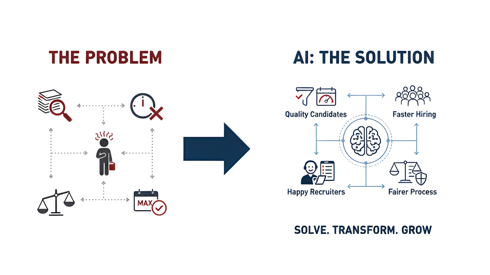
PD 업무 곳곳의 반복을, 팀원들이 직접 스킬과 플러그인으로 만들고 #des-product-designer 채널에 공유했습니다.
각자 만든 스킬을 #des-product-designer에 올려 서로 가져다 쓰고 — 커스텀하고 — 다시 공유했어요. 도구가 팀의 자산이 되는 흐름.
→ "내가 만든 걸 너도 쓴다"가 기본값이 되면서 — 개인의 스킬이 팀의 표준으로 빠르게 번졌습니다.
개인의 실력에 머물지 않도록, 상반기 내내 정기 세션과 온보딩으로 팀 전체의 평균을 끌어올렸습니다.
"디자이너가 AI를 이렇게 썼다"는 실전기를 팀이 함께 써 오늘의집 디자인 블로그에 실었습니다. 그리고 그 위에, 리더의 다음 질문 "AI는 디자인의 정점이 아니라 평균을 높이는 도구다"를 더했습니다.
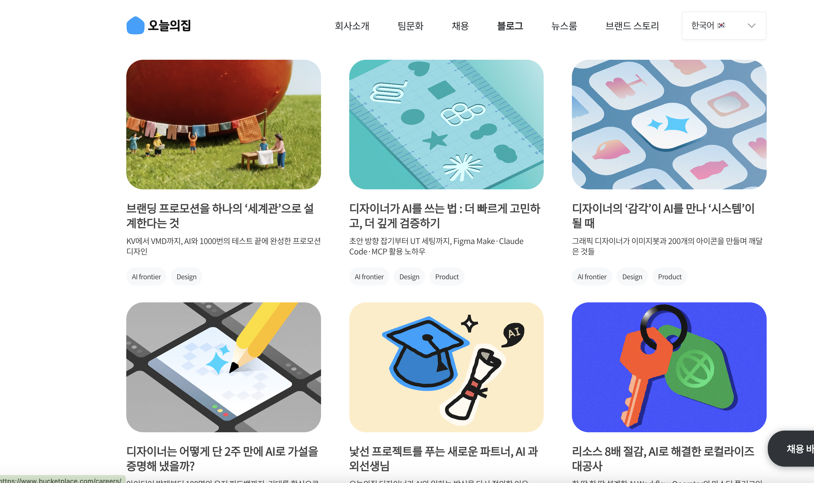
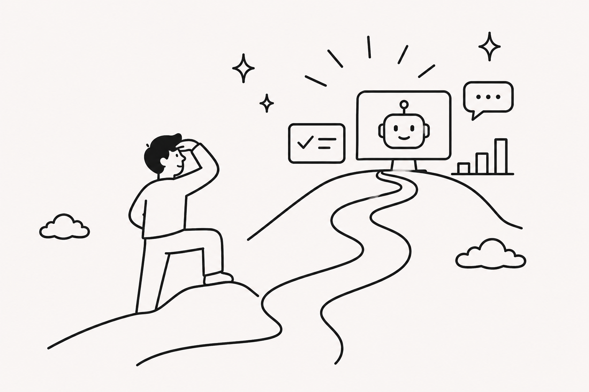
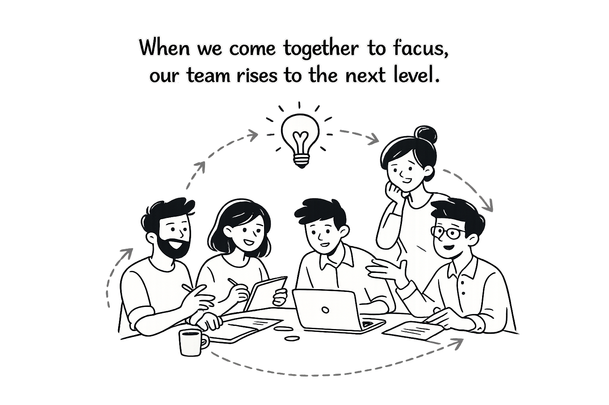
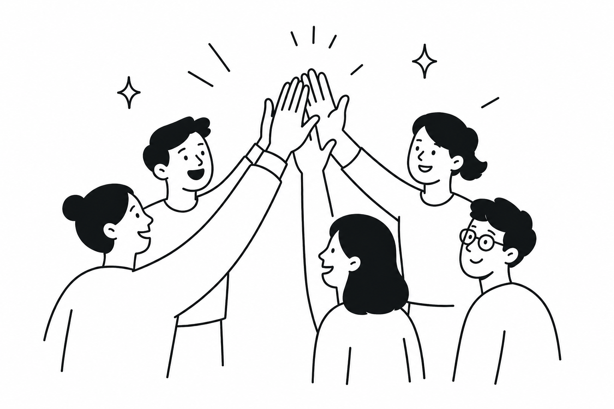
하나는 우리 자신을 향하고, 다른 하나는 우리 바깥을 향합니다. 두 방향이 함께 가야 의미가 있어요.
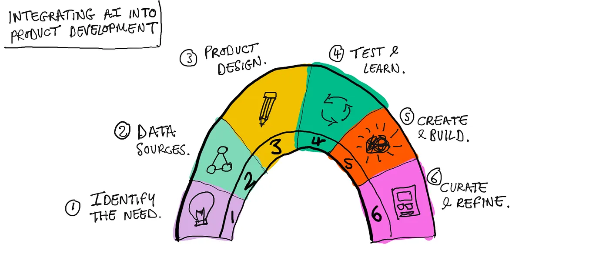
상반기에 PD 업무 전체를 문제 정의 → 설계 → 검토 → 전달 흐름의 16개 과업으로 분해한 지도. 이 지도를 멈추지 않고 계속 다듬고, AI 활용을 팀의 표준으로 굳혀갑니다.
하반기, 우리는 Ohouse Design Site와 MCP를 만듭니다. Mobbin처럼 Copy prompt 한 번으로 누구나 만들기 시작 — 도구의 평균(몸체)과 지식의 평균(두뇌)이 함께 떠받칩니다.
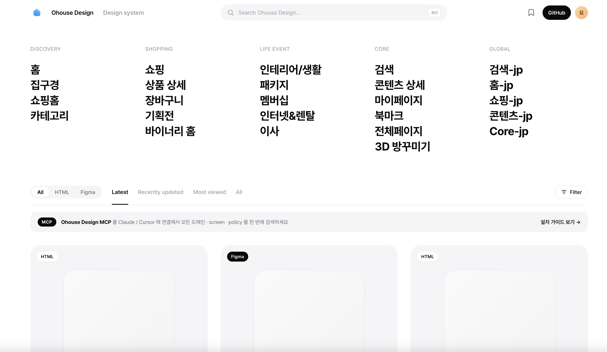
팀 18명 중 핵심 빌더 9명의 미션. (1차 시작 기준 — 진행하며 조정)
| 멤버 | 미션 | 골 · 산출물 |
|---|---|---|
| TTyler | ODS MCP 업데이트 | ods-hermes / prototype MCP에 최신 ODS 컴포넌트·패턴·파운데이션을 정합적으로 노출 |
| JJack | 도메인(트랙) 컴포넌트 + 정책 | CoMaker로 component design.md · 정책 문서가 함께 나오는 워크플로우 |
| JJina | Figma → 개발 친화 명세 변환 | 도메인 컴포넌트 외 나머지를 개발자가 이해하기 쉽게 정리하는 Figma 플러그인 + 스킬 |
| SStella | Screen 프로토타입 HTML 생성 | diff 스킬로 화면 HTML 자동 생성 (ODS MCP · component design.md 기반) |
| DDeeer | 정책 · Experiments 자동화 | 도메인별 트랙 정책 수집 + experiments md 생성 스킬 |
| JJenna | Knowledge 폴더 채우기 | 구조·플로우를 만드는 데 필요한 디자인 지식 정리 (룩앤필 외 영역) |
| YYohan | MCP 모니터링 · Design Context | domains·ods-docs·knowledge 연결 매주 체크 + 도메인 정책·자산 컨텍스트 수집 |
| SSun | Figma 없는 환경 팔로업 | 이 과정을 어떻게 따라갈지 + 3D 에셋 필요 상황에서 표준 이상 결과물 |
| SSelah | PO 없는 환경 정책서 자동화 | PO가 없는 환경에서 피그마로 정책서를 자동으로 만드는 법 |
Figma를 LLM이 잘 읽고 프로토타입을 만들 수 있는 소스로. 네 사람의 작업이 하나의 흐름으로 연결됩니다.
→ ODS · 트랙 컴포넌트 · 정리된 Figma 화면이 갖춰지면, 누구나 그 위에서 프로토타입을 시작할 수 있습니다.
몸체가 '만드는 능력'이라면, 두뇌는 '올바르게 결정하는 기준'입니다. Deeer · Jenna · Yohan이 지식의 레이어를 쌓습니다.
몸체(실행) + 두뇌(판단)가 하나로 닫히면 — 실행할 도구와 올바른 기준이 한 바퀴로 순환합니다.
누구나 쉽게 만들 수 있게 될수록, 디자이너가 뒤에서 다듬는 일이 오히려 늘어납니다. 도구만 쥐여주고 지식 격차를 방치하면, 평균을 높이려던 시도가 디자이너의 부담으로 되돌아와요.
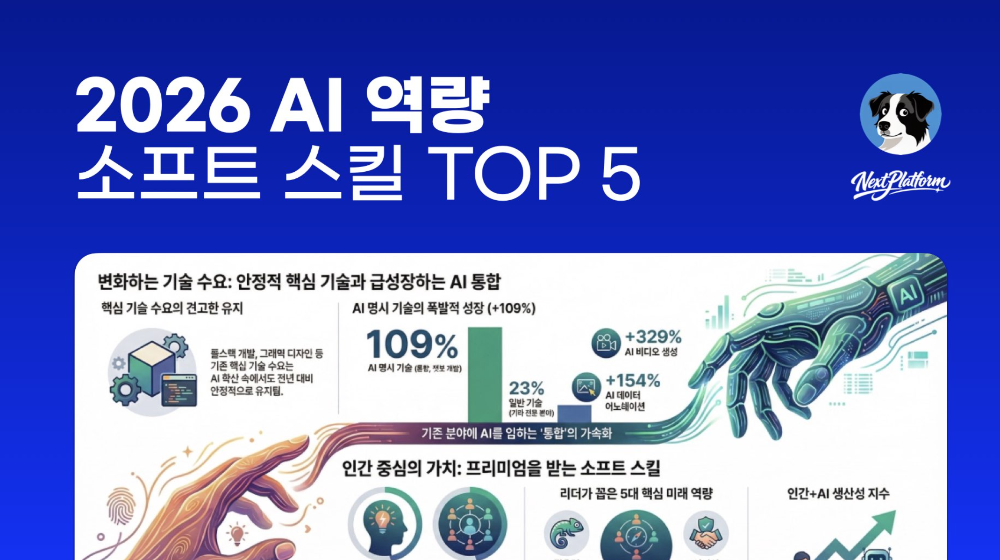
누구나 디자인하는 환경 위에서, 디자이너는 '화면을 그리는 공정'에 머물지 않고 혼자서도 제품을 만들고 임팩트를 냅니다. 다른 PO의 디자인에 피드백을 주고, 내가 기획·데이터까지 직접 끌고 가며 일합니다 — 멀리 있는 남의 사례가 아니라, 우리가 이미 하고 있는 모습입니다.
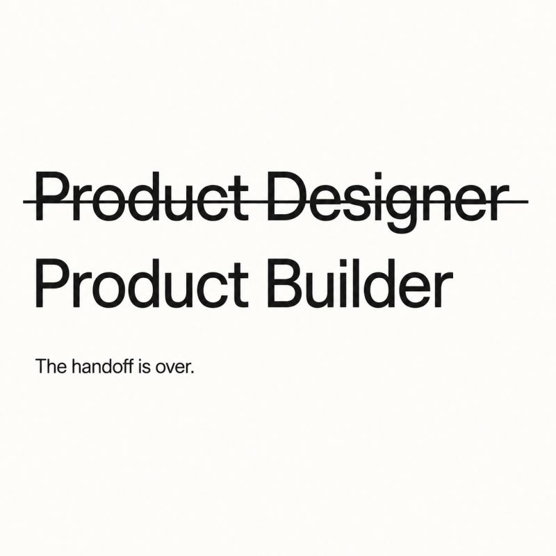
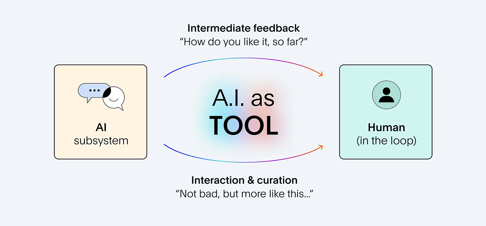
모두가 Product Builder가 되지만, 뿌리는 다릅니다. PO·DA·PD 각자의 출신을 무기로 자기 영역을 주도하며 서로 리뷰·보완합니다. 그 안에서 디자인을 끝까지 책임지고 끌고 가는 건 PD입니다.
도구 숙련도는 머지않아 모두의 평균이 됩니다. 그다음 사람과 사람을 가르는 건 결국 일하는 태도예요. 하반기에 우리가 함께 지킬 네 가지 —
먼저 — 이미 우리 팀이 잘하고 있는 모습을 팀의 기본값으로. 그 위에서 내년엔 더 큰 질문을 던지는 팀으로.
역할이 이렇게 바뀌는 환경에서 기본은 회복탄력성과 유연함 — 새로운 방법과 도구를 기꺼이 시도하고 배우는 자세. 그 위에서 지금 특히 빛나는 세 유형이 있습니다.
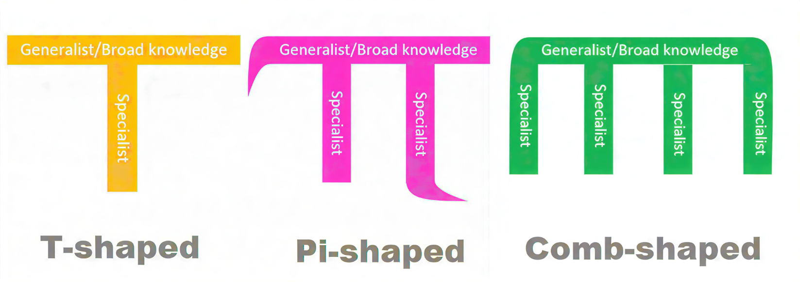
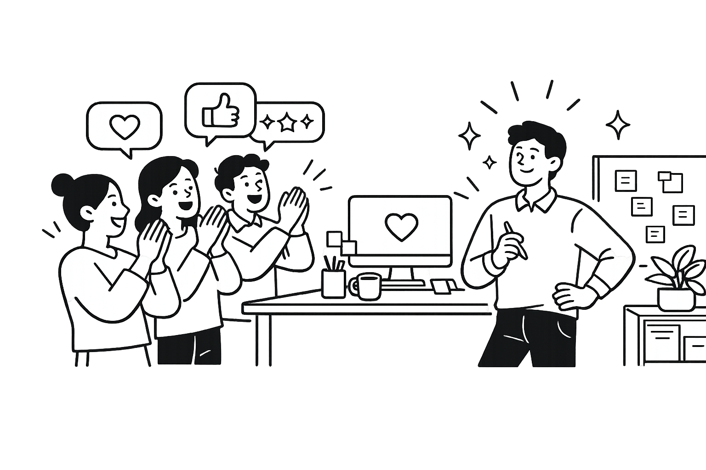